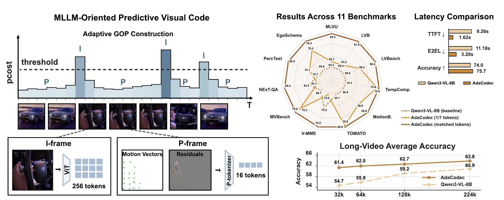
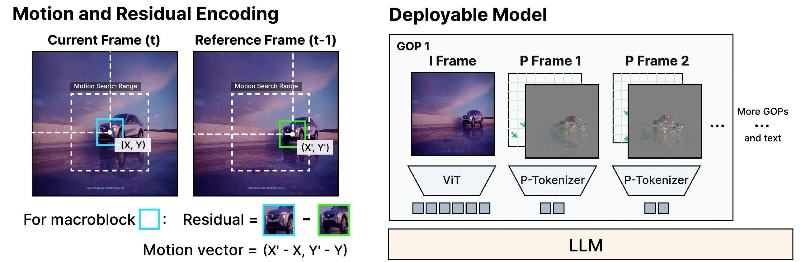
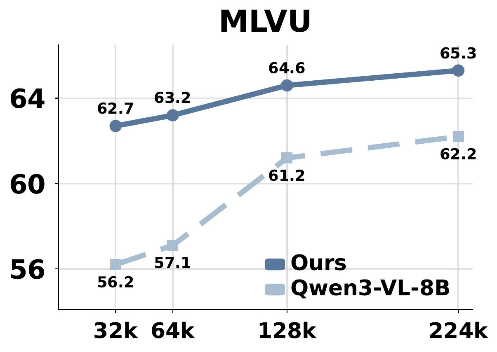
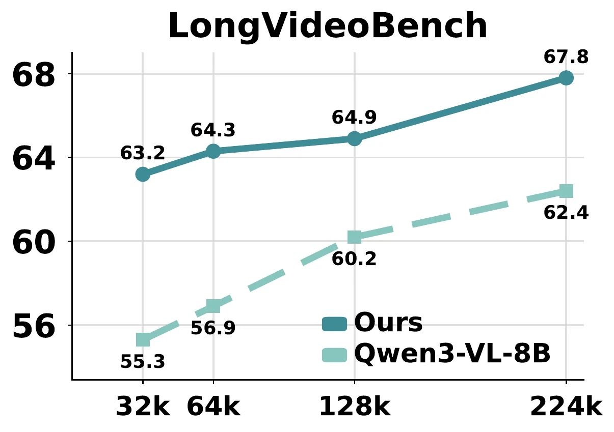
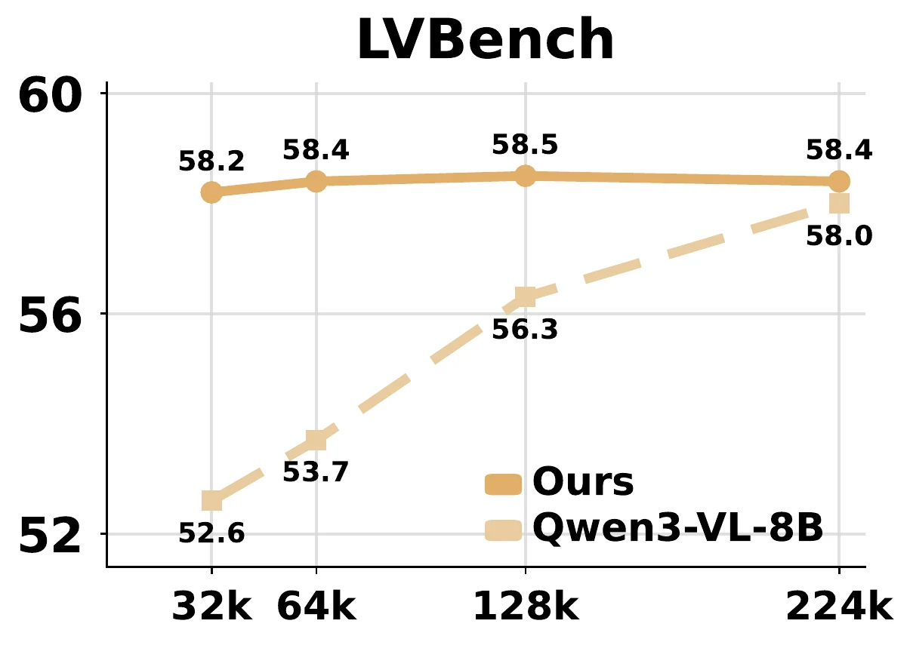
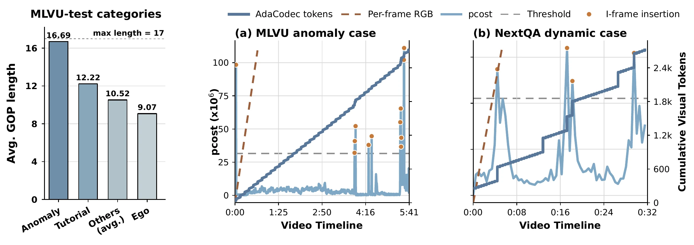

AdaCodec: A Predictive Visual Code
for Video MLLMs

Video is temporally redundant: adjacent frames usually share most objects, background, and layout. Yet existing video multimodal large language models (video MLLMs) usually encode each sampled frame as an independent RGB image, causing visual tokens to repeat content already present in earlier frames. This suggests a more direct video interface: send a full reference frame only when the scene cannot be predicted well from prior context, and otherwise transmit a compact description of inter-frame changes. We call this interface a predictive visual code, and instantiate it for video MLLMs as AdaCodec. AdaCodec spends full visual tokens on a reference frame only when its conditional predictive cost is high; otherwise, it encodes inter-frame changes, including motion and prediction residuals, as compact P-tokens. Across all eleven benchmarks, AdaCodec improves over the Qwen3-VL-8B per-frame RGB baseline at a matched visual-token budget. Even at 1/7 the budget, AdaCodec with 32k tokens surpasses the 224k baseline on all long-video benchmarks; on five general-video benchmarks, it raises the average score while substantially cutting time-to-first-token from 9.26s to 1.62s.
Why Predictive Coding?
Adjacent video frames usually share objects, background, and layout. Per-frame RGB encoding repeats this evidence in the LLM context, causing token cost and latency to grow with sampling density.
Method
AdaCodec first redesigns predictive coding for MLLM tokenization, then uses predictive cost to place I-frames adaptively. The resulting visual code is inserted through a dual-branch tokenization architecture and aligned in two training stages.
Redesign for MLLM Tokenization
AdaCodec changes playback-oriented predictive coding into a visual-token interface: ViT-aligned macroblocks, previous-frame motion reference, a larger search window for low-FPS sampling, and pcost reused for GOP scheduling.
Adaptive GOP Construction
Motion search produces a frame-level predictive cost, pcost. AdaCodec starts a new I-frame when pcost crosses a threshold and keeps predictable frames as compact P-frames.
Architecture and Training
I-frames use the native visual encoder, while P-frames use a P-tokenizer over residual and motion inputs. Stage 1 aligns P-tokens to frozen visual teacher features; Stage 2 aligns the full visual code with the language model.

Main Results
At comparable token budget, AdaCodec improves over the Qwen3-VL-8B per-frame RGB baseline on every reported benchmark. At about one seventh of the token budget, it preserves accuracy across the benchmark groups.
| Method | Long-video | Temporal | General | ||||||||
|---|---|---|---|---|---|---|---|---|---|---|---|
| MLVU | LVB | LVBench | TempComp. | MotionB. | TOMATO | V-MME | MVBench | NExT-QA | PercTest | EgoSchema | |
| Closed-source models | |||||||||||
| GPT-5 | 77.7 | 72.6 | 65.2 | 80.4 | 65.4 | 53.0 | 86.9 | 74.1 | 86.3 | 79.4 | 75.6 |
| GPT-5 mini | 69.1 | 69.7 | 54.7 | 74.9 | 59.9 | 44.1 | 82.3 | 66.5 | 83.2 | 72.0 | 70.9 |
| Gemini 3 Pro | 75.7 | 75.9 | 77.0 | 82.8 | 62.6 | 48.3 | 87.5 | 70.4 | 84.3 | 77.6 | 68.9 |
| Gemini 2.5 Pro | 81.5 | 76.8 | 75.7 | 81.9 | 62.0 | 48.6 | 87.8 | 70.6 | 85.3 | 78.4 | 72.2 |
| Gemini 2.5 Flash | 75.1 | 73.1 | 64.9 | 80.2 | 59.3 | 39.1 | 84.2 | 67.0 | 81.8 | 74.7 | 70.2 |
| Claude Sonnet 4.5 | 64.0 | 65.1 | 50.5 | 72.8 | 58.5 | 39.6 | 80.5 | 62.1 | 79.2 | 64.3 | 73.1 |
| Open-source models | |||||||||||
| InternVL3.5-8B | 53.2 | 62.1 | 43.4 | 70.3 | 56.6 | 24.6 | 68.6 | 72.1 | 81.7 | 72.7 | 58.6 |
| Keye-VL-1.5-8B | 53.8 | 66.0 | 42.8 | 75.5 | 55.1 | 33.0 | 76.2 | 56.9 | 75.8 | 64.2 | 56.3 |
| GLM-4.1V-9B | 56.6 | 65.7 | 44.0 | 72.3 | 59.0 | 30.0 | 75.6 | 68.4 | 81.3 | 74.2 | 62.6 |
| MiniCPM-V-4.5-8B | 60.6 | 63.9 | 50.4 | 72.7 | 59.7 | 29.8 | 73.5 | 60.5 | 78.8 | 70.9 | 49.6 |
| Eagle2.5-8B | 60.4 | 66.4 | 50.9 | 74.4 | 55.7 | 31.0 | 75.7 | 74.8 | 85.0 | 81.0 | 72.2 |
| PLM-8B | 52.6 | 56.9 | 44.5 | 72.7 | 61.4 | 33.2 | 65.4 | 77.1 | 84.1 | 82.7 | 68.8 |
| LLaVA-Video-7B | 52.8 | 58.2 | 44.2 | 66.6 | 54.2 | 24.9 | 69.7 | 58.6 | 83.2 | 68.8 | 57.3 |
| VideoChat-Flash-7B | 56.0 | 64.7 | 48.2 | 69.4 | 60.6 | 32.5 | 69.7 | 74.0 | 85.5 | 76.5 | 51.3 |
| Molmo2-8B | 60.2 | 67.5 | 52.8 | 73.4 | 62.2 | 39.6 | 75.8 | 75.9 | 86.2 | 82.1 | 62.0 |
| Molmo2-O-7B | 55.2 | 63.7 | 49.6 | 73.0 | 60.6 | 36.2 | 69.2 | 74.8 | 84.3 | 79.6 | 56.8 |
| Codec-aware video MLLMs | |||||||||||
| CoPE-VideoLM-7B | - | 56.9 | 46.4 | 68.9 | - | 28.3 | 69.4 | 61.9 | 82.1 | 70.3 | - |
| ReMoRa-7B | - | 60.8 | - | - | - | - | 64.4 | - | 84.2 | 67.7 | - |
| Ours: AdaCodec on Qwen3-VL-8B | |||||||||||
| Qwen3-VL-8B | 62.2 | 62.4 | 58.0 | 74.3 | 56.9 | 35.7 | 75.2 | 68.7 | 83.4 | 72.7 | 69.8 |
| AdaCodec (1/7 token budget) | 62.7 +0.5 | 63.2 +0.8 | 58.2 +0.2 | 75.8 +1.5 | 58.8 +1.9 | 39.8 +4.1 | 75.0 -0.2 | 75.3 +6.6 | 83.1 -0.3 | 75.1 +2.4 | 70.2 +0.4 |
| AdaCodec (comparable token budget) | 65.3 +3.1 | 67.8 +5.4 | 58.4 +0.4 | 75.9 +1.6 | 59.9 +3.0 | 40.0 +4.3 | 75.5 +0.3 | 76.6 +7.9 | 84.2 +0.8 | 80.5 +7.8 | 70.4 +0.6 |
Higher is better. Bold and underlined values mark the best and second-best results among open-source models. LVB denotes LongVideoBench, and V-MME denotes Video-MME. Deltas compare AdaCodec against the Qwen3-VL-8B per-frame RGB baseline.
Efficiency
The latency evaluation uses matched hardware, batch size 1, the same prompt template, identical decoding settings, 64 generated tokens, and the same input resolution.
| Method | Visual Tokens | Codec Build | TTFT | E2EL | Peak Memory | Score |
|---|---|---|---|---|---|---|
| Per-frame RGB baseline | 55,893.2 | -- | 9.26s | 11.18s | 34.6 GB | 74.0 |
| AdaCodec | 8,550.4 | 0.12s | 1.62s | 3.20s | 36.5 GB | 75.7 |
Token Budget Scaling
On long-video benchmarks, AdaCodec dominates the per-frame RGB baseline from 32k to 224k visual tokens. The low-budget setting already exceeds the high-budget RGB baseline.



Adaptive Behavior
AdaCodec does not apply a fixed compression schedule. It allocates longer GOPs to stable videos and refreshes I-frames more often when camera motion, scene changes, or residuals increase.

Cite
@article{hou2026adacodec,
title={AdaCodec: A Predictive Visual Code for Video MLLMs},
author={Hou, Haowen and Huang, Zhen and Liang, Zheming and Si, Qingyi and Li, Chenglin and Dong, Shuai and Shao, Kele and Li, Ruilin and Wang, Dianyi and Duan, Nan and Wang, Jiaqi},
journal={arXiv preprint arXiv:2606.02569},
year={2026}
}